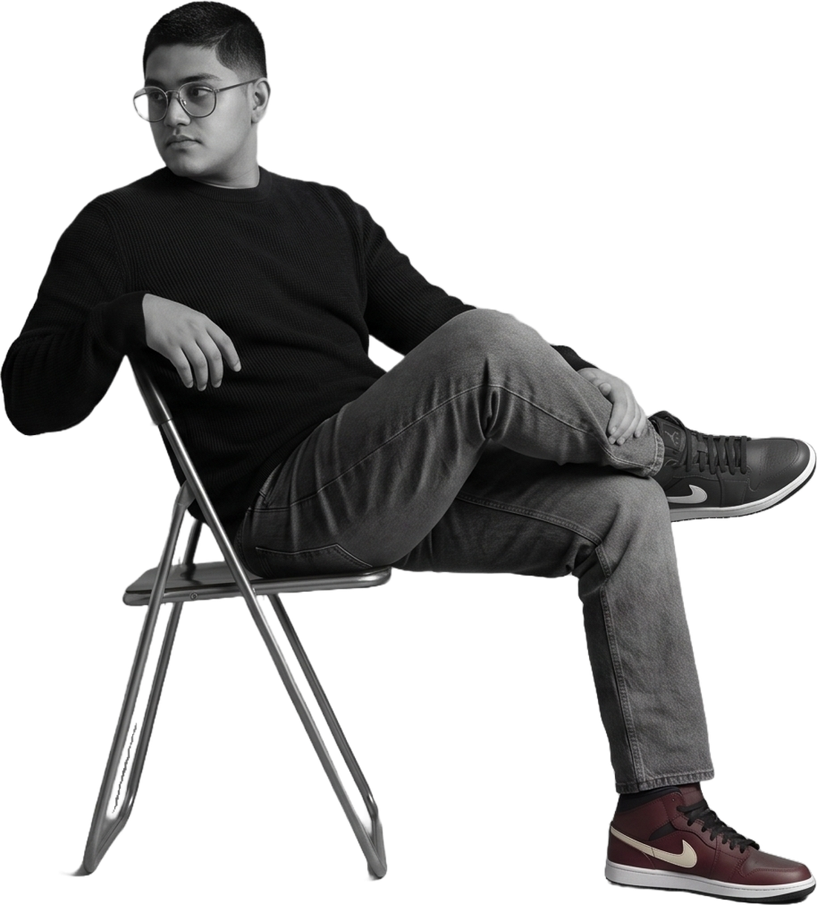

Kevin Sebastián Frías García — Jr. Software Developer
Profile

01 identity / experience
Identity, experience, and the way the work actually gets made.
Stack — 7 of 11 in use
- TypeScript
- React
- Next.js
- Node.js
- Tailwind
- Git
- JavaScript